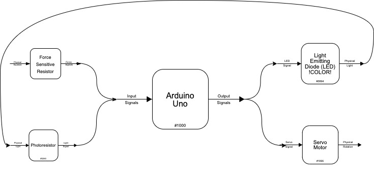
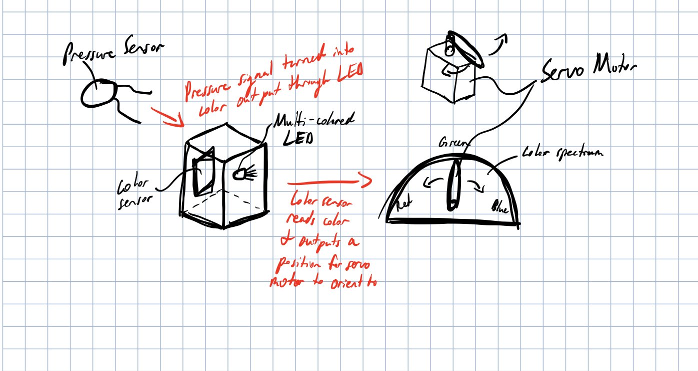
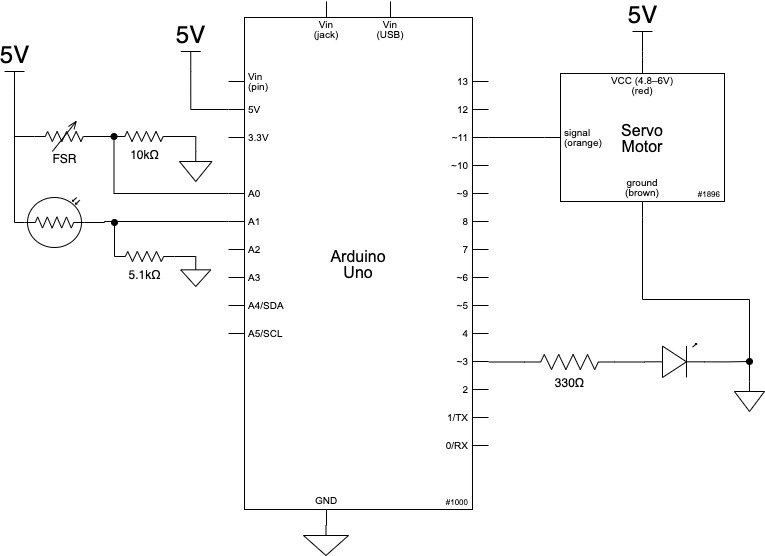
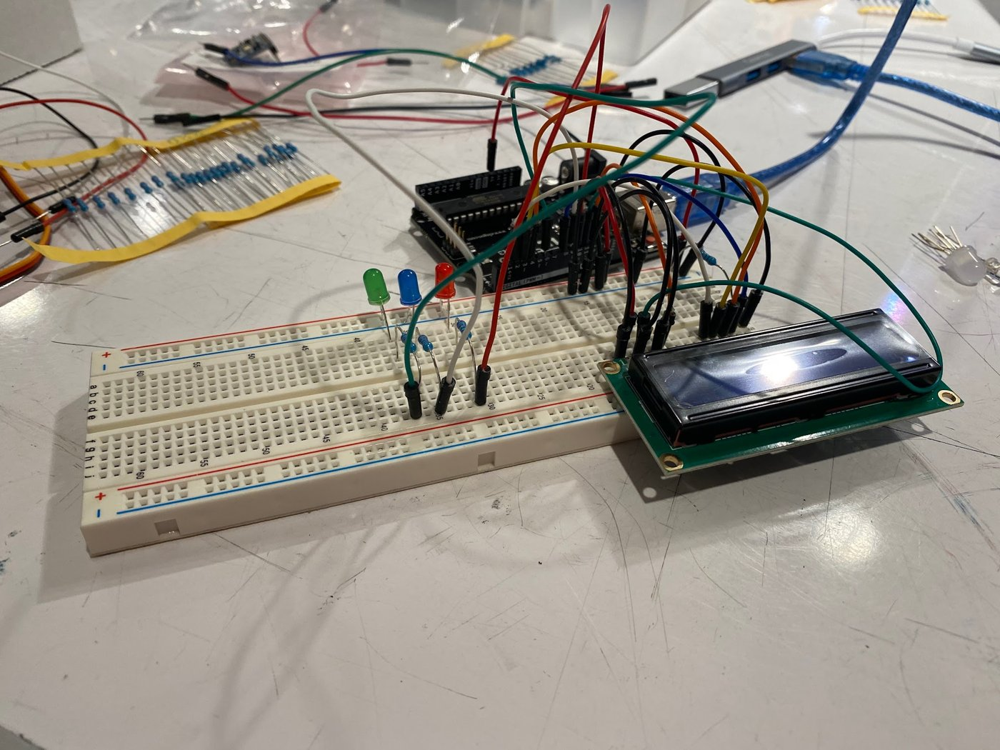
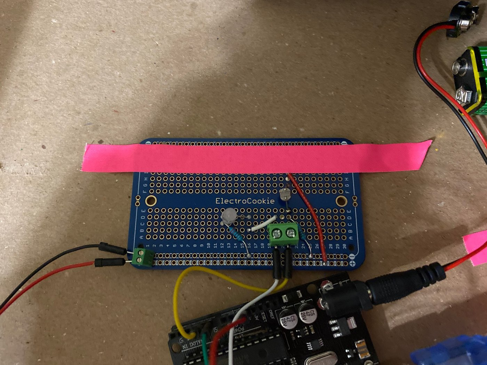

Overview
For a spring 2021 physical computing class, my partner and I built a double transducer. This machine senses how hard a force sensor is pressed and turns that into an amount of light. A light sensor reads the light and turns it into an angle for a servo motor. An LCD shows the values at each step.



Build
We started with a breadboard prototype, added a potentiometer to adjust the LCD brightness, and finished on a soldered protoboard.


Challenges
The hardest part was writing mapping functions so each stage used the full range of the next. We first tried color as the middle step, but converting pressure to RGB and back was unreliable, so we switched to light intensity. We also found that the Arduino servo library disables PWM on pins 9 and 10, which explained why our LEDs wouldn't light.